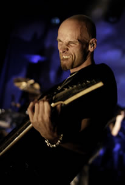
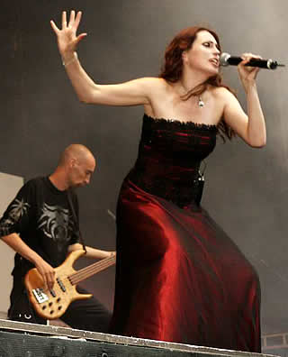

Entrevista
de Robert Westerholt à Metal Ways - Setembro de 2008
Como você
se sente sobre o lançamento do DVD Black Symphony?
Estou muito orgulhoso dele, e isso não acontece frequentemente.
Eu sei que, pelo menos para os fãs, será fantástico.
Acho que eles gostarão muito. Acho que a coisa mais especial
nesse DVD é o show, porque é gravado em uma qualidade
enorme e isso foi uma grande experiência! Além
disso, há uma agradável entrevista com a banda,
de um canal de TV holandês. Nunca tivemos isso em um DVD
antes, então é muito legal.
De que maneira você está
envolvido no processo de edição e produção?
Eles mixam primeiro e então ouvimos tudo e dizemos: "Você
pode colocar um pouco disso ou daquilo?" É
assim que funciona. Quanto melhores forem as pessoas, menos
você tem que fazer.
Em
uma entrevista anterior, você disse que a banda gosta
mesmo de performances acústicas, e essa é uma
das razões da Theater Tour. Há outras
razões?
Você sabe, recebemos a proposta para fazer
isso. Então, eu também chequei com outra banda
que estava tocando em um teatro. O que é muito legal
em teatros é que eles são bem íntimos,
mais do que um clube, mesmo que nesse clube caibam apenas umas
300 pessoas. Se todo mundo senta, todos verão tudo perfeitamente.
O mesmo pode-se dizer sobre a música. É uma coisa
muito emocionante.
Mas você acha mesmo que as
pessoas permanecerão sentadas? Porque os fãs do
WT geralmente não fazem isso!
Sim, acho que eles ficarão. Bem, eu espero
que no final eles se levantem. Seria muito legal. Você
deve saber, é um show diferente. Quero dizer, também
tocaremos instrumentos elétricos, Não será
um acústico completo. Vamos tocar as músicas de
uma forma diferente.
Haverá surpresas nessa turnê?
Por exemplo, convidados especiais ou canções bem
antigas ?
Sim, haverá músicas que não tocamos muito,
e também algumas que você não esperaria
que tocássemos num acústico. E creio que haverá
outras surpresas.
Você poderia me dar uma dica?
Tentaremos fazer um show bem mágico...
Em uma entrevista francesa, eu
li que vocês usariam esse conceito acústico pra
fazer outro DVD. Você pode me falar mais sobre isso?
Não, não faremos. Não há
planos pra isso. Nós mesmos gravaremos.
Neste ano, vocês abriram
para o Iron Maiden em algumas turnês. Essa turnê
foi chamada de Somewhere Back in Time, e eles tocaram
músicas muito antigas. É uma coisa que você
gostaria de fazer no Within Temptation em algum ponto de sua
carreira?
Acho que precisamos de mais uns 5 álbuns
antes de fazer algo assim.
Você disse algumas vezes
que o público francês era muito bom. Então
você acha que um dia haverá um DVD Live in
Paris?
Live in Paris soa bem. Isso é
ótimo, é como Live in Tokyo. Seria bom,
talvez se fizermos mais shows do Black Symphony com
a orquestra em outros países.
É algo em que vocês
estão trabalhando?
Sim, estamos trabalhando nisso. Não sabemos se é
possível, mas tentaremos.
No Rock en France, você disse
em uma entrevista que vocês não tem nenhum material
novo ainda. Mas você sabe em que direção
vocês querem trabalhar ?
Sim, provavelmente terá algum tipo de
conceito, mas é cedo e nada está certo ainda.
Mas estamos tentando olhar para essa direção.
Terá
menos metal do que o anterior?
Nunca sentimos que soava menos metal. Eu mesmo acho que o último
álbum é o mais pesado que fizemos. Então
para nós, isso nunca é uma discussão. Você
tem que fazer com que a música saia de você. Estamos
sempre nos experimentando, apesar de eu não achar que
fizemos grandes mudanças. Temos de surpreender a nós
mesmos (no bom sentido, claro). Essa é a coisa mais importante.
No Rock en France, vocês
abriram para o Metallica. Os fãs franceses não
foram muito respeitosos com vocês. Como conseguiram continuar
sorrindo?
Para ser honesto, eu raramente os vejo. Estou
tão concentrado no show. Eu realmente não tenho
problemas com isso. E acho também que isso funciona de
forma inversa: se há pessoas gostando do nosso show,
entre eles também haverá pessoas que ficarão
entediadas com as outras bandas. Isso é o que acontece.
Após 8 anos, vocês
perderam apenas 2 edições do Appelpop.
O que é tão especial nesse festival?
Não sei. O que me surpreende é
que tocamos muito aqui e eu acho que é porque nossa agenda
frequentemente está vazia no começo de setembro,
porque não estamos em turnê e os festivais terminaram.
Então novamente esse será o último festival
no qual tocaremos esse ano. Outra coisa estranha é que
sempre é muito bom. Todo ano você pensa que talvez
o Appelpop será chato, mas nunca é.
O que seria pra você a melhor
coisa em fazer parte do Within Temptation?
A melhor coisa é que você pode
fazer sua própria música. A parte criativa de
tudo, pra mim, é a melhor coisa.
Extraída
de www.within-temptation.com.br